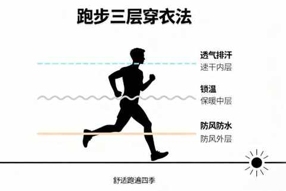
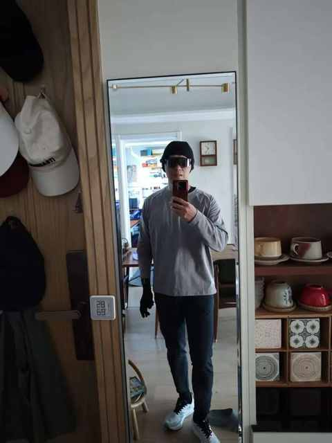
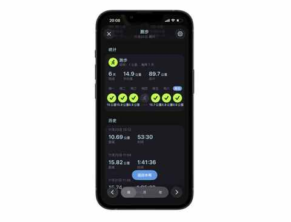
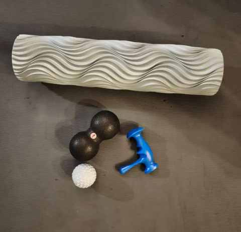
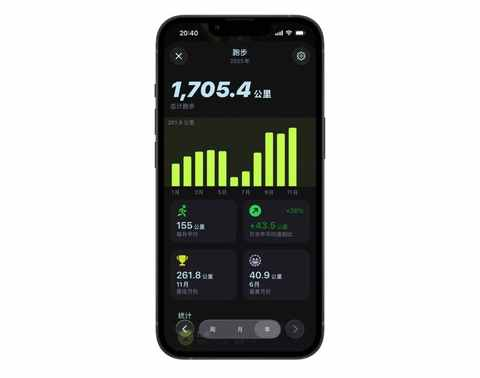
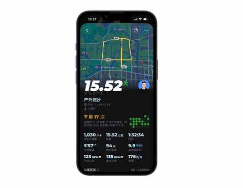

备战首马！月跑量即将首次突破300公里，我的5点真实感悟
一、最简单的堆跑量方式：延长单次距离
跑步的频次没有变化，只是单次距离尽量都超过 15km，根据配速的不同，单次跑步时间在 75 分钟到 90 分钟。

目前跑了 18 次，本月计划再跑 3 次，按现在的单次平均距离 14.5km，预估 11 月最终的跑量在305km 左右。
二、秋冬季节跑步，保暖不容忽视
11 月 9 号合肥的半马结束后，仅休息一天，便继续堆跑量，但完全忽略了一个常识：因为比赛时的强度大，在比赛后人的抵抗力会下降一点。
而秋冬季节跑步的时候，不仅是气温下降，而且有东西南北方的风像你袭来，尤其是流汗之后，冷风一吹，在抵抗力不足的情况下，特别容易感冒。
这种时候，长袖长裤都穿上，风大的话，也套上一个马甲，可能跑的过程中不太舒服，但能大大降低感冒的可能，因为一感冒便要停训。
比较流行的是：三层穿衣法，可根据自身喜好去搭配。

如果气温偏低或者风比较大，一定也戴上帽子和手套。

三、要同步增加拉伸的时间
在刚开始提升跑量的时候，更多的时候是兴奋，因为每天都是一个新的里程碑，几乎每天都有一个新的突破。

肌肉的疲惫，虽迟但到，在上周跑了接近 90km之后，周一休息的时候并没有在拉伸上多花时间和功夫。
在周二和周三跑步的时候，便发现配速降了，而且腿抬不高，是一种有力用不出来的感觉。这种情况，是必须要做深度拉伸的信号，借助泡沫轴等工具或者找按摩师傅来帮忙，让紧绷的肌肉放松下来。
这几个用于肌肉放松的小工具你都认识吗？

运动后总酸痛？这4个家常小物件，是放松肌肉的“隐形神器”
四、量的积累比想象中更重要
堆跑量，听起来容易，但执行起来很不简单。
堆跑量的时候，往往有一个明确的目标，大部分也都是和我一样，要备赛半马、全马、越野赛……

在今年的6月和 7 月，是我本年跑量的洼地，两个月加一起才跑 100km 多点，导致在暑期，整体跑步的能力变化，是很直接且明显的退步。
跑量，是维持跑步能力的重中之重。
五、关注自身体感，安全第一
在积累跑量的过程中，难免会出现一些不适，有些休息即可缓解，有些可能与跑姿有关，有些可能与肌肉力量相关……
不只是在跑步的过程中，在其他运动中，也要养成关注体感的习惯，就拿心率来说：有人天生是高心率，有人是低心率。
即便这两个人最大摄氧量相同，年龄、身高、体重都类似，跑同样的配速，但心率可能差 20，一个是 130，另一个是 150。

关注自身体感，了解自己的身体特点在运动的过程中，尤为重要。
在对自身的各项参数和特点充分了解的基础上，我们能识别异常信号，安全的运动，才能让身体更健康！
近期文章
不禁想问问大家，被Ai工具省下来的时间，都用来做什么了呢？
听播客5年，日均108分钟：这3个收获，让我认识到“声音”的力量
小米高端化成了吗？拿15S Pro当主力机4个月，我有这5个真实感受
90 年，35 岁，E区出发，即将在福州解锁首全马
嘿！还记得“为QQ等级挂机”的岁月吗？来晒晒你的等级吧！
11 个月，开极氪7X跑两万公里，用车总结及好物分享
一个长居省外中年人的合肥印象：记2025的年第4次合肥行
中年减肥成功2年后，才发现运动形式真不重要，守住这3点才能不反弹！
我的两个配图利器：两个APP强强联合，实现1+1 > 2的视觉升级
别慌！和所有Intel版Mac用户共享：3个让我们继续用的理由和2个续命秘籍
中年减肥成功2年后，才发现这5个坑当初要是有人点醒我该多好！
中年减肥成功2年后，才发现维持体重靠的不是毅力，而是这5个微习惯